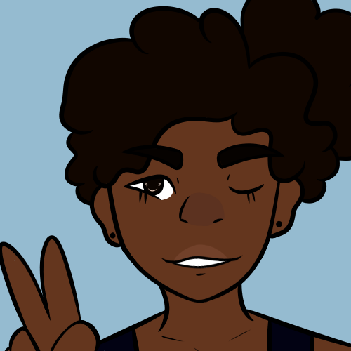
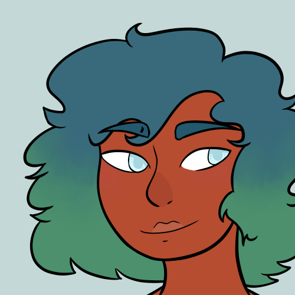
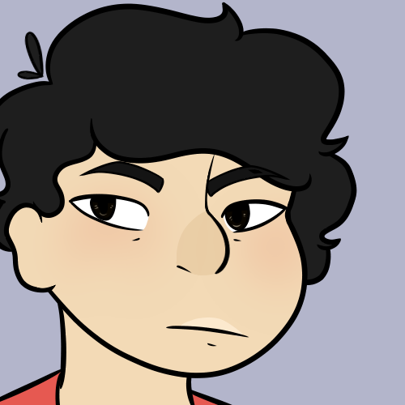

Kimerae Souahtaier
Pronouns: she/her/hers/herself
Birthday: 2/29/2397
Age (In Story): 22 years old
About: The leader of World Explorers, her father is the founder. Kimerae is very extroverted and outgoing, she likes being outside. She can often be found having a jog around the grounds or trying to make something out of wood found out exploring.

Alimiana "Ali" Cuayen
Pronouns: she/her/hers/herself
Birthday: 9/28/2401
Age (In Story): 18 years old
About: Ali was chosen in the raffle to be part of World Explorers. She's very outgoing and loves learning. She wishes to be the lead archeologist for World Explorers. She can often be found reading books around the camp.

Sérénité "Serenity" Mersevilaen
Pronouns: they/them/their/themself
Birthday: 1/3/2398
Age (In Story): 21 years old
About: Serenity was chosen in the raffle to be part of World Explorers. While it may not be helpful out in the forest, they can speak 6 languages fluently, and is on the way to learning 5 more. They were raised by their mother for the first few years of their life and then, when they turned 12, they were separated. Serenity has learned to live independently, but loves engaging with others, despite being mostly introverted. They are often found gardening or fishing.

Jun-Ho Jeong
Pronouns: they/them/their/themself OR he/him/his/himself
Birthday: 4/1/2399
Age (In Story): 20 years old
About: Jun-Ho was chosen in the raffle to be part of World Explorers. Jun-Ho is very introverted and often doesn't talk with everyone else. Their family wanted them to be part of World Explorers but they did not. They don't like being outside and so can always be found in the camp's house either reading or studying anything the team brings in. No one can get them to talk, it's as if they can't speak.